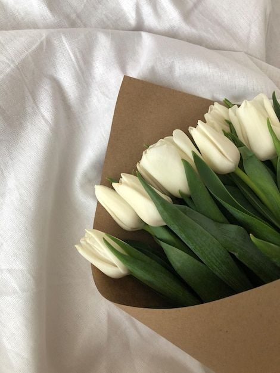
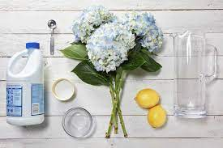
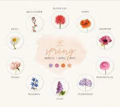
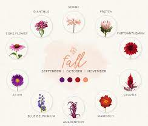

The Flower Alley
Floral Artistry

Our Flower Care Tips
We want your beautiful bouquets to last as long as they can when you purchase from us. Here are our best curated tips from professionals on how to take care of our stunning flowers.
- Keep the vase filled with water contating the flower food that comes with the arrangement. The packets of flower food are usually to be mixed with about a quart of water. Do not dilute with more water.
- Replenish the water frequently. You can change the water every 2-3 days. As bacteria can build up in flowers make sure you take out any petals or leaves that fall off causing rot.
- Trim at least a half inch of stem off your flowers when arranging into your vase with a sharp knife or clippers. Cut the stems at a 45 degree angle to ensure accurate absorption of water.
- Keep our flowers in a cool spot and away from direct sunlight or vents. Cut flowers are more likley to mature if left in sunlight decreasing their life.
- Try not to let our flowers sit next to ripening fruits or vegetables such as apples or bananas. They give off an odorless gas that is deadly to flowers and induces them to drop petals.
- When the flowers die make sure you clean your vase thoroughly with soapy water so that the next bouquet is not affected. Bacteria can build up in a dirty vase making it harder for newer flowers to thrive.
Flower Food Recipe at Home

Follow this recipe when the packet of flower food that your bouquuet comes with runs out. Ours are carefully crafted with bactericides that slow the growth of bacteria. This is also another way to take care of you flowers and make them last longer. Please not that our zinnias, sunflowers and glads do NOT like flower food.
- 1 teaspoon of sugar
- 2 teaspoons of lemon juice
- 1 teaspoon of bleach
- Quart of warm water
Typical Seasonal Guides
Some of your favorite flowers grow at particular points of the year during various seasons. We have included a standard seasonal flower guide whether that be a wedding, graduation or birthdays to plan accordingly.

